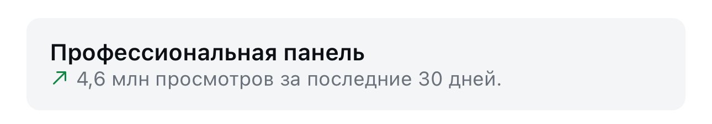

Человек десять месяцев собирал свою систему для Claude Code - и отдал её всем бесплатно
Everything Claude Code: 292 скилла и 68 субагентов в одной сборке. Ставится одной командой, работает не только в Claude Code, но и в Codex и Cursor
Что это и зачем
Claude Code из коробки - это один помощник, который делает то, что ты попросишь, и забывает контекст между сессиями. Работает, но каждый раз заново
ECC (Everything Claude Code) добавляет к нему готовую инженерную систему: субагенты - отдельные исполнители под планирование, ревью, безопасность, и скиллы - готовые рабочие инструкции, которые агент подхватывает сам, когда задача этого требует
Внутри есть, например, скилл, который прогоняет код на уязвимости, скилл, который держит память проекта в порядке, и скиллы, которые учатся на твоих прошлых сессиях и превращают удачные решения в переиспользуемые
В ролике звучит 286 скиллов - столько было на момент записи. Сверено напрямую в репозитории 22.09.2026: сейчас 292, плюс 94 команды. Проект живой, у тебя на экране цифра может быть ещё больше
Дальше - установка по шагам и первая задача, на которой это видно
Шаг 0. Что нужно до старта
Три вещи, которые почти наверняка у тебя уже есть, если ты работаешь в Claude Code: сам Claude Code версии 2.1 или новее, Git и Node.js 18 или новее (это то, на чём работают такие инструменты)
Куда нажать. Открой терминал (окно, где команды печатаются текстом) и вставь три строки по очереди:
node --version git --version claude --versionЧто увидишь. На каждую - номер версии. Если вместо номера пишет «command not found», эту программу нужно поставить: Node.js берётся на nodejs.org, там сразу кнопка под твою систему
Что это даёт. Установка ниже пройдёт с первого раза, а не упрётся в ошибку на середине
Запусти мастер установки
Куда нажать. В том же терминале вставь одну строку:
npx ecc-universal@2.2.2 setupЧто увидишь. Мастер задаст несколько вопросов и ПОКАЖЕТ список файлов, которые собирается изменить, до того как что-то запишет. Для обычной личной установки выбирай Global user (ставится сразу во все твои проекты) и Standard hooks
Что это даёт. Вся сборка - скиллы, субагенты, команды - встаёт в Claude Code как один плагин, руками ничего складывать не нужно
Перезапусти Claude Code и проверь
Куда нажать. Закрой текущий диалог с Claude Code и открой новый. В поле чата набери:
/plugin listЧто увидишь. Список подключённых плагинов, в нём строка ecc@ecc
Что это даёт. Это и есть подтверждение, что система встала. Старый диалог про неё не знает - поэтому новый обязателен
Дай первую задачу и посмотри на разницу
Куда нажать. В поле чата набери команду планировщика со своей задачей в кавычках:
/ecc:plan "добавь авторизацию пользователей"Что увидишь. Claude не бросится сразу писать код, а сначала выдаст план работ - что и в каком порядке будет делать
Что это даёт. Ровно то, за чем всё это ставится: сначала думает, потом делает. На больших задачах это экономит переделки
Попробуй готовые скиллы
Куда нажать. Эти команды работают сразу после установки:
/code-review /security-scan /build-fixЧто увидишь. Первая - разбор твоего кода свежим взглядом, вторая - проверку на уязвимости, третья - починку ошибок сборки
Что это даёт. Три задачи, которые обычно делаются руками и долго, становятся одной строкой
Если что-то не встало
Три вещи по порядку:
- Мастер ругается на версию - проверь, какая версия сейчас актуальна:
npm view ecc-universal version, и подставь её в команду вместо 2.2.2 - Установка прошла, но
/plugin listпустой - запусти диагностику:npx ecc-universal@2.2.2 doctor, а следомnpx ecc-universal@2.2.2 repair - Хочешь откатить всё назад - сначала посмотри, что будет удалено, и только потом удаляй:
npx ecc-universal@2.2.2 uninstall --dry-run, затем та же строка без--dry-run
Не только Claude Code
Та же сборка ставится в другие среды - в ролике про это последняя фраза. Одной командой можно настроить сразу несколько:
npx ecc-universal@2.2.2 install --guidedМастер спросит, какие среды подключить. На сегодня Claude Code - основная и самая стабильная, у Codex своя нативная поддержка, Cursor и OpenCode в бете, Gemini и ещё несколько - в экспериментальном режиме
Где смотреть подробности
github.com/affaan-m/ECC- сам репозиторий: код, документация, список всех скиллов и агентов
Система сейчас бесплатная
Открытый код, лицензия MIT, ставится и работает сегодня без оплаты и подписки. Платишь только по своей обычной подписке Claude
Что происходит с блогом, пока я собираю такие инструкции
Пишу про такие находки регулярно, и вот что это даёт блогу на нейросетях за то же время




Три рилса по миллиону и больше. Без рекламы и без команды: производство занимает минуты, время уходит на смысл
Чужая сборка - это чужая логика работы
Я одна, в декрете, без команды разработки строю системы на нейросетях сама. ECC - отличная готовая сборка, но она собрана под чужие задачи: там 292 скилла, из которых тебе реально нужны десять, и ни одного под твой конкретный проект
Поставить чужую систему - один вечер. Собрать свою, где скиллы и агенты сделаны под то, чем ты занимаешься каждый день - другая работа, и начинается она не с команды в терминале, а с разбора твоих задач
На консультации разбираю, как выстроить такую систему у тебя
Напиши слово
мне в личку Telegram
НаписатьМои каналы и страницы